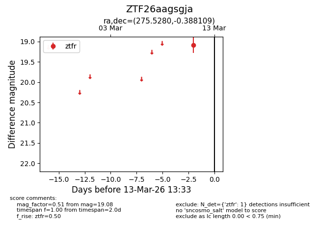
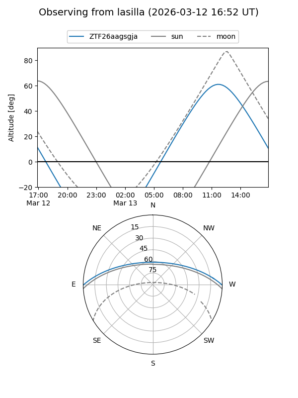
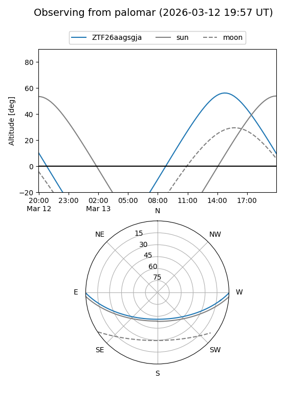

ZTF26aagsgja
Target ZTF26aagsgja at 2026-03-13 13:34
Aliases and brokers:
FINK: link
Lasair: link
ALeRCE: link
alt names
ZTF26aagsgja (ztf,fink_ztf)
Coordinates:
equatorial (ra, dec) = 275.5280,-0.38811
equatorial (HMS+DMS) = 18:22:06.73,-00:23:17.19
galactic (l, b) = (29.2274,+6.34294)
Flags:
Photometry:
last ztfr=19.08
1 ztfr detections
Lightcurve

Visibility


Additional plots